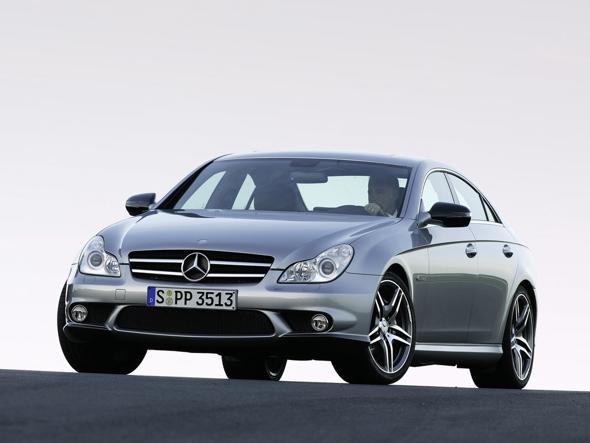
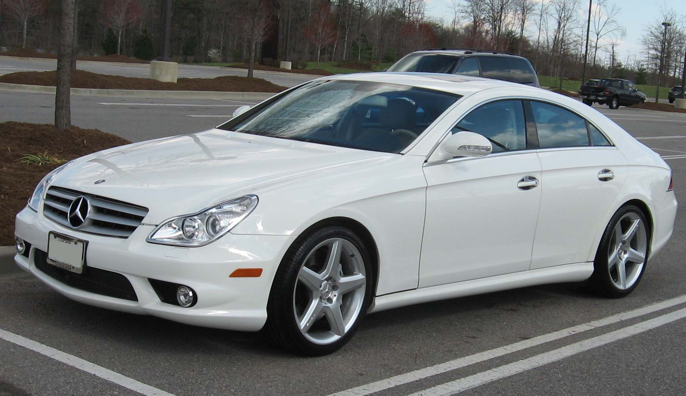
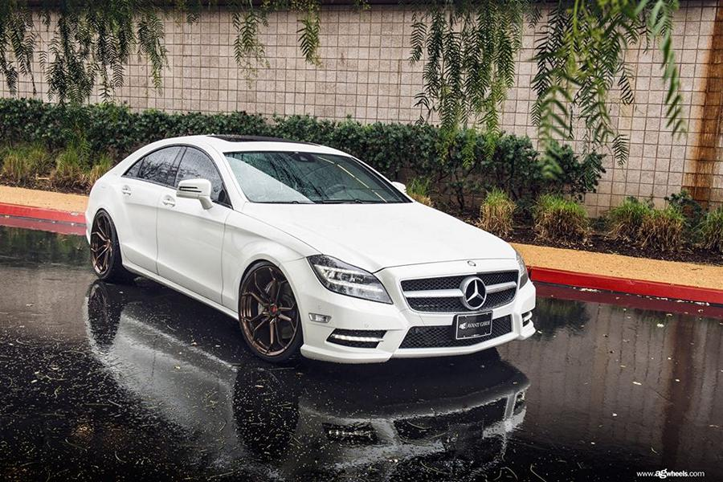
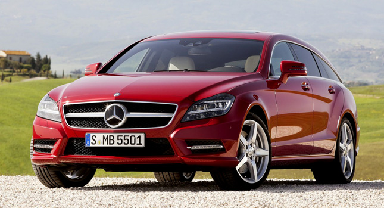
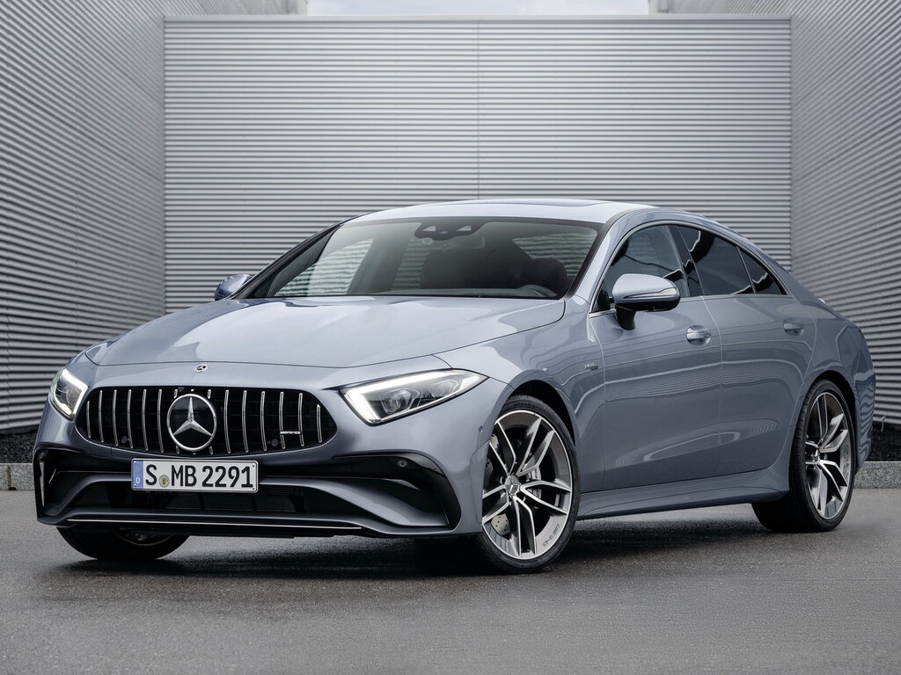

Mercedes-Benz CLS-class-ը միջին չափի շքեղ չորսդռնանի կուպեների և կայանի վագոնների շարք է, որն արտադրվում է գերմանական Mercedes-Benz ապրանքանիշի կողմից 2004 թվականից: E-class-ի վրա հիմնված մոդելները դիրքավորվում են որպես ավելի սպորտային և հագեցած՝ համեմատած E-class-ի հետ:
Առաջին սերունդը՝ C219-ը, արտադրվել է 2004-ից 2010 թվականներին միայն չորսդռնանի թափքով:
2010 թվականի վերջին ներկայացվեց երկրորդ սերնդի չորսդռնանի կուպեն՝ C218-ը, որը վաճառքի հանվեց 2011 թվականի սկզբին։
2012 թվականին թողարկվել է Mercedes-Benz CLS Shooting Break կայանի վագոնը (գործարանային ինդեքս X218)։
Երրորդ սերունդը՝ C257-ը, ներկայացվել է 2017 թվականի նոյեմբերին և վաճառվում է 2018 թվականի մարտից՝ միայն չորսդռնանի տարբերակով։